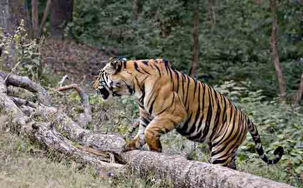
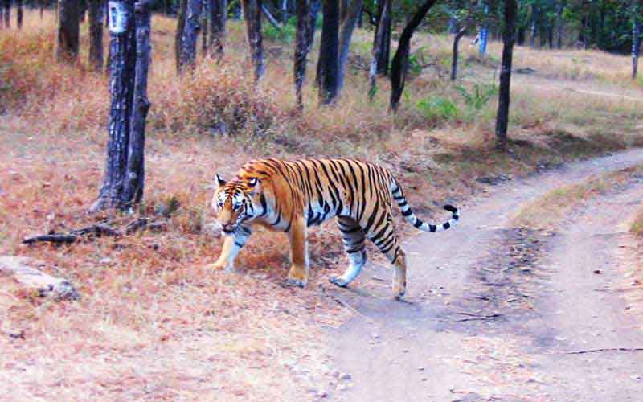
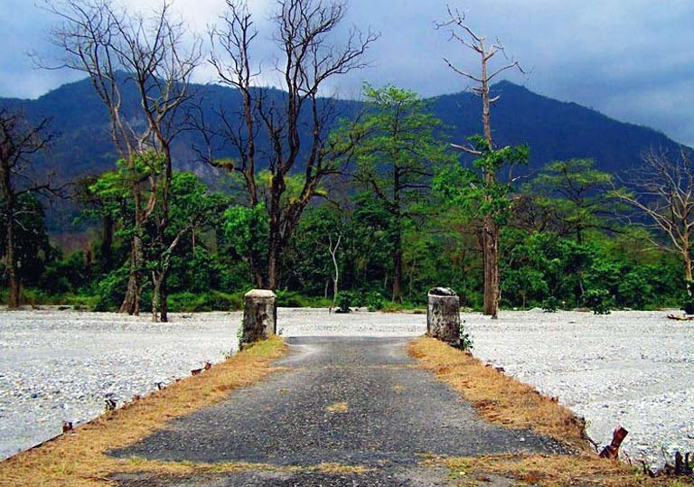
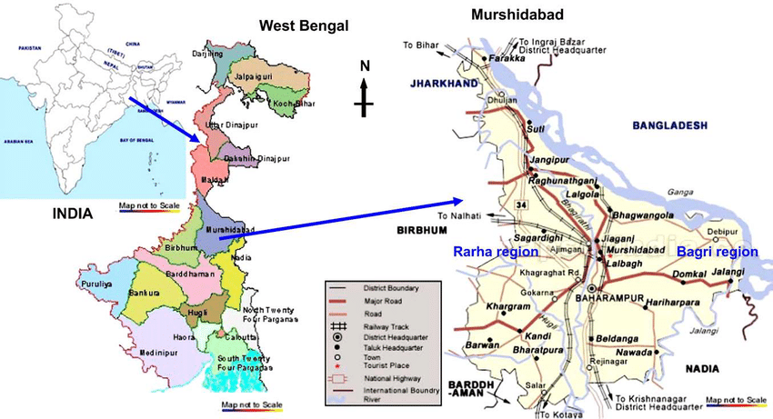

Jaldapara National Park


Jaldapara National Park, located in the foothills of the Eastern Himalayas in Alipurduar District, is a haven for wildlife enthusiasts. Known for its population of Indian one-horned rhinoceroses, Jaldapara is also home to elephants, deer, bison, and a variety of bird species.
The forest is mainly savannah covered with tall elephant grasses. The main attraction of the park is the Indian one-horned rhinoceros. The park holds the largest rhino population in India after Kaziranga National Park in Assam. Other animals in the park include Indian leopard, Indian elephant, sambar, barking deer, chital, hog deer, wild boar and gaur. A floristic investigation was made during 2016–2018 to document the tree diversity and their present status in the Jaldapara National Park. A total of 294 species of trees belonging to 189 genera and 63 families, including 4 species of gymnosperms were recorded
The park offers thrilling jeep and elephant safaris, allowing visitors to explore the dense forests and grasslands while spotting wildlife in their natural habitat. The best time to visit Jaldapara is from October to May, avoiding the monsoon season.
Buxa Tiger Reserve


Buxa Tiger Reserve, situated in the Alipurduar District of West Bengal, is a part of the Buxa National Park. The reserve is known for its rich biodiversity, including the elusive Royal Bengal Tiger, elephants, leopards, and a variety of reptiles and birds.
Buxa Tiger Reserve lies in Alipurduar district of West Bengal. Its northern boundary runs along the international border with Bhutan. The Sinchula hill range lies all along the northern side of BTR and the eastern boundary touches that of the Assam state. National Highway No.31 C roughly runs along its southern boundary. It is the easternmost extension of extreme bio-diverse North-East India and represents highly endemic Indo-Malayan region. The fragile "Terai Eco-System" constitutes a part of this reserve. The Phibsoo Wildlife Sanctuary of Bhutan is contiguous to the north of BTR. Manas National Park lies on east of BTR. BTR, thus, serves as international corridor for Asian elephant migration[4][5] between India and Bhutan. To the south-west, the Chilapata Forests form an elephant corridor to the Jaldapara Wildlife Sanctuary. The reserve encompasses as many as eight forest types. The divisional headquarters is located at Alipurduar. The forest is divided into two divisions: East and West. Buxa Fort is an important landmark for this reserve. This fort was captured by British-India in 1865 after the Bhutan War from Bhutan. Later this fort was used as a detention camp for Indian freedom fighters during the Indian freedom movement.
Visitors can embark on thrilling jeep safaris and guided treks through the dense forests and hilly terrains of the reserve. The Buxa Fort, located within the reserve, adds a historical touch to the adventure, offering panoramic views of the surrounding landscape.
Adventure Sports in Dooars


The Dooars region, extending across the foothills of the Eastern Himalayas in West Bengal, is a paradise for adventure enthusiasts. The area offers a variety of adventure sports, including river rafting, jungle trekking, and mountain biking.
The Dooars belonged to the Kamata Kingdom under the Koch dynasty;[1] They acted as a trade route between Assam and Bhutan. Assam exports Muga, silk cloth, endi cloth, dried fish and rice and imports consisted of woollen cloth, gold-dust, rock salt, yaktails musk, ponies and blankets from Bhutan.[3] In the early 17th-century, the combined forces of Ahoms and Koches temporarily checked the Bhutia's transgression. During this period two important Duars on the Darrang frontier, Buriguma and Killing were under Ahoms control. During the Ahom–Mughal conflicts in the mid 17th century, the Bhutias attempted to extend their authority as far as Gohain Kamal Ali. In the reign of Ahom king Jayadhwaj Singha, the Druk Desi of Bhutan requested the transfer of these Duars to Bhutan. Therefore, an agreement was drawn, and the Darrang Duars went to the hands of Bhutias on the condition of annual tribute to Ahom side. The Darrang Duars were also surrendered to Ahoms annually for four months from June to October. These Duars were properties of Ahom government, but the Druk Desi of Bhutan took possession of them in last phase of 18th-century when the Ahoms were engaged in internal revolutions of the state.[4] This region was controlled by the kingdom of Bhutan when British India annexed it in 1865 after the Duar War under the command of Captain Hedayat Ali. Bhutan lost almost one-fifth of its area in this war.[5] The area was divided into two parts: Western Dooars and Eastern Dooars. The Western Dooars were under the Kingdom of Cooch Behar State from 1586 to 1949, and the Eastern Dooars under the Kingdom of Koch Hajo. Under the Koch government, the officer-in-charge of the Duars were called Subahdar.[6] Similar office existed under the Bhutan government, the Subah was selected by the provincial governors called Ponlops. The Ahom government managed the Duars through Duarieas.[7] The other two Dooars were the Kamrup Duars and Darrang Duars. The Eastern Dooars was merged with Goalpara district in Assam, the Kamrup Dooars was merged with Kamrup district, the Darrang Dooars was merged with Darrang District and the western part was turned into a new district named Western Dooars
The Teesta and Rangeet rivers provide excellent opportunities for white-water rafting, while the dense forests and hilly terrains are perfect for trekking and wildlife spotting. The picturesque landscapes and rich biodiversity of Dooars make it a must-visit destination for those seeking an adrenaline rush.

Maplinked